AI를 쓰는 세 가지 상태
애디 오스마니는 일 대부분을 AI 에이전트에게 맡기다 보니 하루에 직접 머리를 써서 생각하는 시간이 거의 없어졌다고 털어놓아요. 그래서 AI를 쓰는 상태를 셋으로 나누고, 지금 내가 어디 있는지 점검하라고 해요. 영상은 그가 X에 올린 글 'Critical thinking when agents do the work'를 화면에 띄워 놓고 설명해요.
글 맨 위 그림이 이 영상 전체의 뼈대예요. 점 세 개가 offloading에서 deferral을 거쳐 surrender로 내려가고, 마지막 구간은 점선이에요. 한 단계씩 미끄러지듯 내려간다는 뜻이에요.
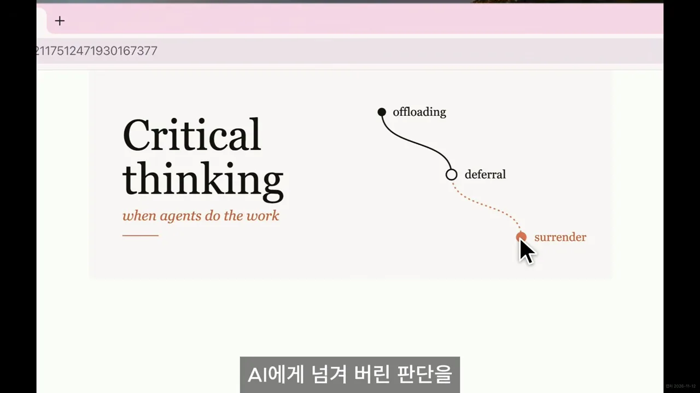
세 상태를 가르는 기준은 하나예요. AI가 한 작업 결과를 내가 얼마나 검토하느냐예요. 영상은 cognitive offloading을 '인지적 위임', deferral을 '판단의 연기', cognitive surrender를 '판단의 포기'로 옮겨요.
인지적 위임은 일은 AI에게 맡겨도 결과의 책임은 여전히 나한테 있는 상태예요. 클로드 코드에게 화면 수정을 맡겼더라도 무엇이 왜 바뀌었는지 설명할 수 있으면 여기에 있어요. 애디는 자기가 하루 종일 이 상태로 일한다고 하고, 우리에게도 권해요.
글 본문이 세 상태를 그대로 정의해요. 맨 위(At the top)는 결과의 주인 자리를 지키는 위임이고, 가운데(the middle)는 도구의 출력이 새 입력이 되면서 결과가 더는 가설로 다뤄지지 않는 상태예요. 맨 아래(At the bottom)가 AI의 출력이 조용히 내 것이 되어 확인할 필요조차 못 느끼는 상태예요.
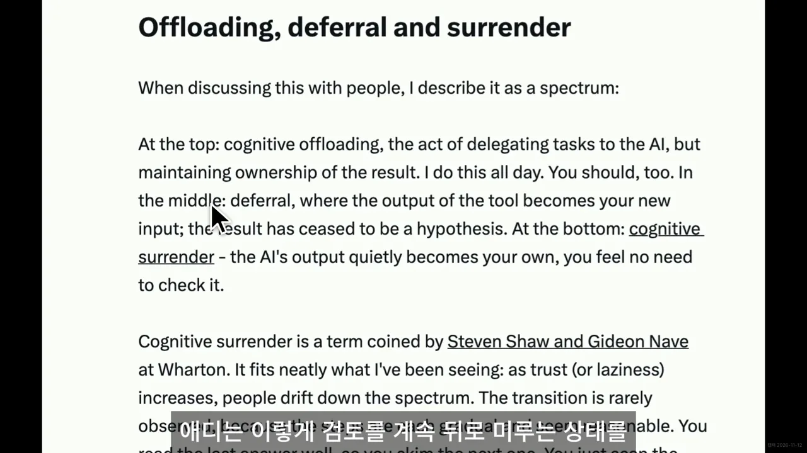
판단의 연기는 예를 들면 이래요. 클로드 코드가 로그인 화면을 만들었는데 보지도 않고 "회원가입 화면도 만들어 줘"를 보내요. 검토하지 않은 화면 위에 새 기능이 계속 쌓여요. 발표자는 이 상태를 가장 조심해야 한다고 봐요. 미뤄도 되는 상황은 분명 있지만, 명령은 내가 내리고 있으니 내가 통제하고 있다고 착각하기 쉽거든요. 실제로는 AI가 혼자 아무 검토나 의도 없이 일하고 있는데도요.
판단의 포기는 서서히 와요
판단의 포기는 AI의 답을 검토할 능력조차 없어서 완전히 손을 놓은 상태예요. 애디는 앤트로픽에 합류하기 직전인 7월 키노트에서 위임과 포기를 이렇게 갈랐어요. 위임은 일을 맡기면서 결과가 맞는지 판단할 근거도 같이 내놓으라고 하는 거예요. 포기는 내 의견이 생기기도 전에 AI의 답을 그대로 내 답으로 삼는 거예요.
키노트 화면에는 'Cognitive surrender.'라는 제목과 함께 '맹목적으로 AI 답을 받아들이고 비판적 사고를 멈추는 것'이라는 정의가 떠 있어요. 오른쪽 숫자 73%는 AI가 틀렸을 때 사람들이 그 틀린 답을 받아들인 비율이에요.
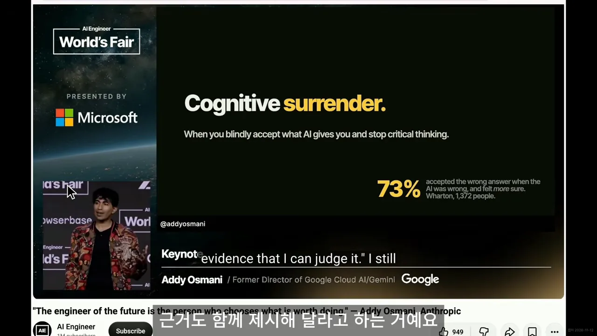
포기는 한 번에 오지 않아요. 처음엔 AI의 설명을 꼼꼼히 읽다가, 내용이 어려워질수록 조금씩 이해를 내려놓아요. 그러다 누가 지금 작업의 의도를 물으면 대답을 못 하게 돼요. 글에서 하이라이트된 문장이 이 경계선이에요. 에이전트의 도움을 받아서라도 질문에 답하지 못하면 주인 자리를 내준 거예요.
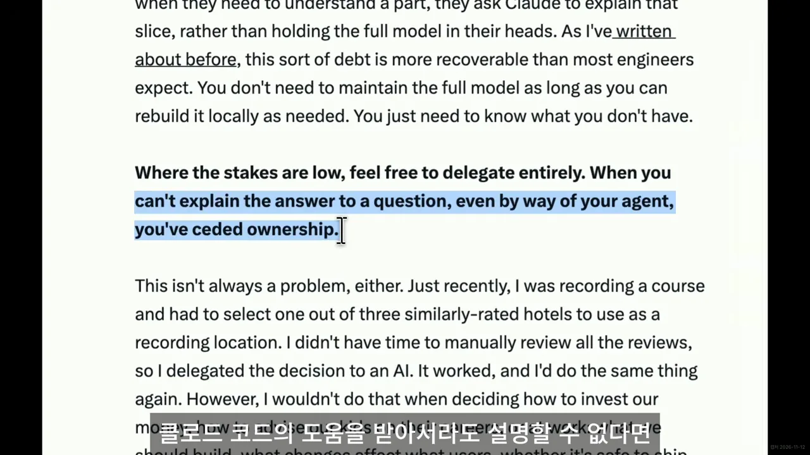
그렇다고 모든 내용과 의도를 늘 꿰고 있으라는 말은 아니에요. 애디가 스스로 던지는 질문이 있어요. 지금 생각을 정리하는 걸 도와 달라는 건지, 생각 자체를 넘기는 건지예요. 그리고 바로 뒤에 '둘 다 괜찮다, 어느 쪽인지 알고만 있다면'이라고 답해요.
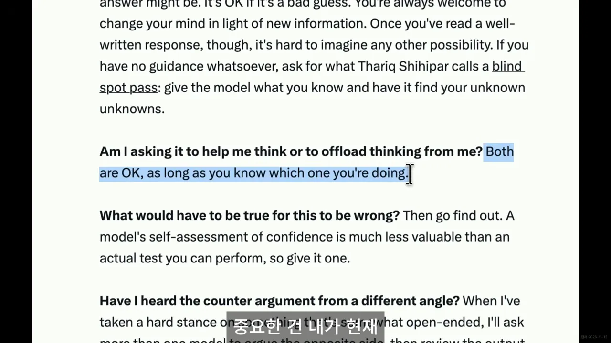
발표자는 이 상태가 남 얘기가 아닌 사람이 많다고 해요. 클로드 코드의 말은 이해하지 못한 채 '다 됐다'는 완료 보고만 보고 넘기고, 누가 이 기능을 왜 넣었냐고 물으면 답을 못 하는 상태예요. 이런 사람들이 결국 코딩을 직접 배워야 하냐고 묻는데, 발표자의 답은 분명해요. 지금 배울 건 코드가 아니라, 내 작업의 의도를 쥐고 AI 에이전트의 작업을 이끄는 방법이에요.
사람의 생각은 맨 앞과 맨 끝으로
그럼 의도를 쥐고 에이전트를 이끈다는 건 구체적으로 뭘까요. 애디는 세 상태를 정의한 11월 글에서 방향을 하나 내놓아요. 'Quality in, quality out' 소제목 아래 첫 문단이에요. 사람의 머릿속 모델은 여전히 필요하지만 이제 그 자리는 한가운데가 아니라 앞과 끝이라고 해요. 앞쪽엔 작업 설명과 맥락, 뒤쪽엔 결과 검토가 있어요.
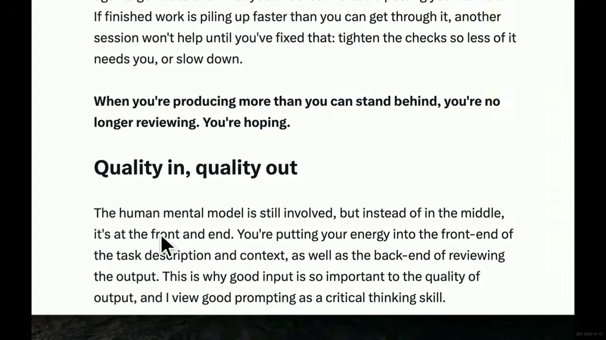
이 변화를 한 그림으로 보면 이래요. 예전에는 구현 자체가 사람의 일이라 생각도 거기 몰려 있었어요. 지금은 구현을 AI가 맡으니, 사람의 생각은 양 끝으로 옮겨 가야 해요.
발표자가 애디의 글 전체에서 가장 중요하게 꼽는 문장은 따로 있어요. 같은 문단의 뒷부분이에요. 예전에는 모호한 요청을 하면 같이 일하는 누군가가 이의를 제기했고, 그제야 내가 정리를 덜 했다는 걸 깨달았어요. 그런데 에이전트는 대개 거기서 나를 멈춰 세우지 않아요.
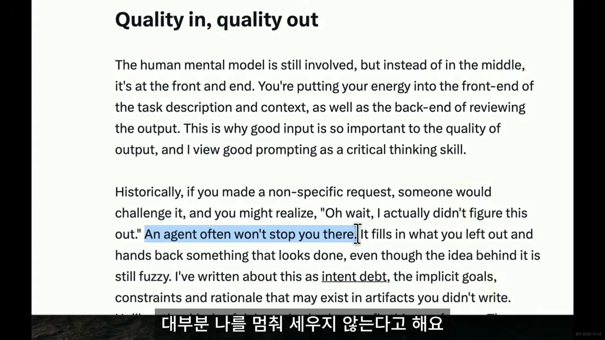
클로드 코드에게 한 줄만 보내도 그럴듯한 화면이 나오죠. 문제는 내가 말하지 않은 부분을 전부 클로드 코드가 대신 정해서 채웠다는 거예요. 화면에 하이라이트된 'it makes a lot of small decisions for you'가 그 얘기예요. 기본값, 범위 밖인 것, 요구 사항끼리 부딪칠 때 무엇을 고를지 같은 작은 결정들이에요.
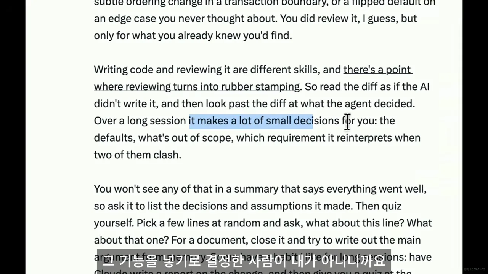
그래서 누가 이 기능을 왜 넣었냐고 물으면 답을 못 해요. 코드를 못 읽어서가 아니라, 그 기능을 넣기로 결정한 사람이 내가 아니니까요. 발표자는 그래서 판단의 포기가 의지나 성실함의 문제가 아니라고 확신해요. 혼자 클로드 코드와 일하는 환경에서는 아무도 우리를 멈춰 세워 주지 않아서 생기는 문제라는 거예요.
의도와 어긋나면 멈추게 하기
원인이 '아무도 멈춰 세우지 않는 것'이라면 해법도 분명해요. 내 의도와 어긋나는 요청이 들어오는 순간 클로드 코드가 스스로 작업을 멈추고 나에게 되묻게 만들면 돼요. 발표자는 직접 만든 예제 프로젝트로 이걸 보여 줘요. 구독 관리 서비스인데, 기획 단계에서 '절약 추천' 기능은 만들지 않기로 정해 뒀어요.
발표자의 문서에는 시험 방법이 표로 정리돼 있어요. 왼쪽이 일부러 보내는 기획 밖 요청, 가운데가 그 요청이 걸리는 파일, 오른쪽이 돌아오는 반응이에요. 첫 줄 '절약 추천 기능 만들어줘'는 mission.md의 안티 전략에 걸려서, 멈추고 항목을 짚은 뒤 취소할지 미션을 고칠지 묻게 돼 있어요.
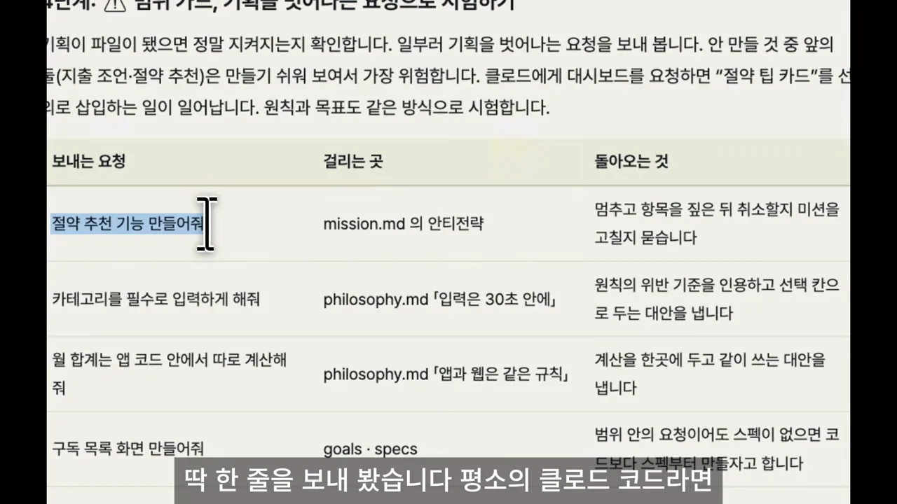
실제로 "절약 추천 기능 만들어 줘" 한 줄을 보내 봐요. 평소 같으면 바로 구현을 시작했겠지만, 이번엔 클로드 코드가 코드를 쓰기 전에 미션·철학·목표 파일부터 읽어요. 답의 첫 줄이 '진행하기 전에 멈춰야 해서 아직 아무것도 만들지 않았어요'예요. 이유로 polaris/mission.md의 '안 할 것(Anti-strategy)' 목록 2번 '절약 추천'과 겹친다고 짚고, 지금 단계 목표에도 절약 추천은 앞당길 이유가 없다고 덧붙여요.

화면 아래쪽의 세 갈래가 그 선택지예요.
- 만들지 않기(추천)
- '추천' 대신 '사실을 보여 주는' 기능으로 바꾸는 절충안. 예를 들면 가장 비싼 구독 금액을 조언 없이 숫자로만 보여 주기
- 정말 절약 추천이 필요하다면 미션부터 고치기
예전 같으면 그대로 구현되고 완료 보고만 올라왔을 요청이에요. 발표자는 이걸 '내 프로젝트 맥락을 아는 동료와 일하는 느낌'이라고 표현해요.
원칙에 어긋날 때도 똑같이
'안 할 것'처럼 분명한 경우만 있는 건 아니에요. 이 서비스엔 '입력은 30초 안에 끝난다'는 원칙이 있어요. 화면 위쪽이 philosophy.md의 input-under-30-seconds 원칙이고, 필수 칸은 다섯 개로 둔다고 적혀 있어요. 그 아래 '원칙을 어긴 것으로 보는 경우'에 카테고리를 필수 칸으로 바꾸고 싶어질 때가 그대로 적혀 있어요.
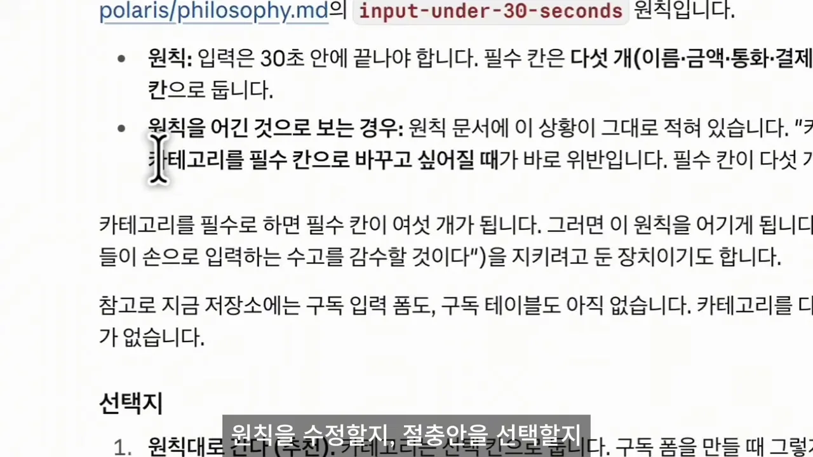
"카테고리를 필수로 입력하게 해 줘"를 보내면, 클로드 코드는 원칙대로 갈지, 원칙을 고칠지, 절충안을 고를지 먼저 물어요. 흐름을 한 장으로 그리면 이래요.
flowchart LR
A["한 줄 요청"] --> B["미션·철학·목표 파일부터 읽기"]
B --> C{"의도와 어긋나나?"}
C -- "아니요" --> D["구현 진행"]
C -- "예" --> E["멈추고 걸린 항목 짚기"]
E --> F["선택지 제시: 원래대로 / 절충 / 기준 고치기"]
F --> G["사람이 판단"]
발표자가 말하는 '작업을 이끄는 상태'가 바로 이거예요. 내 의도와 어긋나는 순간마다 클로드 코드가 판단을 요청해요. 그리고 더 중요한 효과가 있어요. 클로드 코드는 작업 중에 수많은 결정을 대신 내리고, 사람은 그걸 다 검토하지 못해요. 미션과 원칙이 적혀 있으면 내가 미처 못 본 결정까지 내 기준을 따르게 돼요. 판단을 미루는 게 아니라 미리 내려 두는 거예요. 그 맥락을 이해한 클로드 코드가 일을 받아서 하다가 거꾸로 우리에게 질문하는 구조예요.
요청서를 매번 못 쓰면, 한 번 세팅해요
클로드 코드가 스스로 멈출 수 있었던 이유는 단순해요. 구현에 들어가기 전에 의도가 먼저 적혀 있었기 때문이에요. 애디가 말한 '맨 앞' 단계예요. 애디도 글에서 비슷하게 말해요. 화면 아래쪽 문단이 그 대목이에요. 도움을 청하기 전에 요청서를 내 말로 직접 쓰라고 하고, 거기 담을 것으로 대상(audience), 범위 밖 항목, 완료의 정의를 꼽아요.
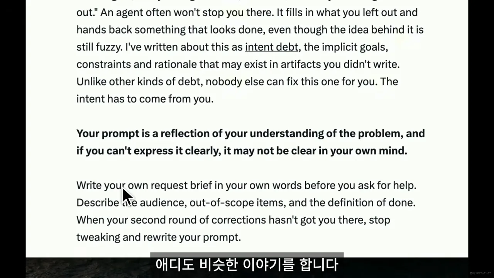
요청 내용이 스스로도 명확하지 않으면 AI가 나를 인터뷰하게 하라고도 해요. 의도만큼은 누구도 대신 정해 줄 수 없고, 반드시 내가 정해야 하니까요.
그런데 발표자는 요청할 때마다 손수 요청서를 쓰는 건 불가능하다고 봐요. 집중력은 한정돼 있어서, 어떤 날은 기획서를 꼼꼼히 쓰지만 어떤 날은 한 줄만 보내게 되거든요. 애디도 글 마지막 'What to bring with you'에서 같은 단서를 달아요. 첫 항목 'Be intentional'에서, 에이전트가 나를 인터뷰하고 근거를 보여 주는 건 미리 그렇게 세팅해 둔 경우뿐이니 세팅해 두라고 해요. 다만 어떻게 하는지는 알려 주지 않아요.
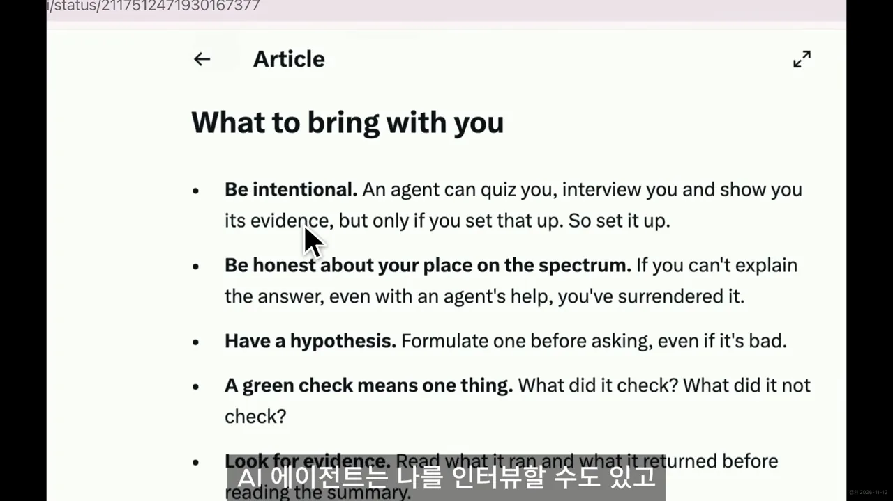
한 번 세팅해 두는 인터뷰
발표자는 이 빈칸을 직접 만든 클로드 코드 플러그인 Polaris로 채웠어요. 한 번 세팅해 두면 클로드 코드가 늘 의도부터 읽고 일하는 구조예요. 프로젝트를 시작하면 사람을 먼저 인터뷰해요. 화면의 빠른(quick) 인터뷰는 맥락, 미션, 철학, 목표 네 부분으로 나뉘어 있어요. 미션에서는 존재 이유와 안 할 것, 가장 위험한 가정을 묻고, 철학에서는 목표가 바뀌어도 지킬 원칙 두 개를 물어요.
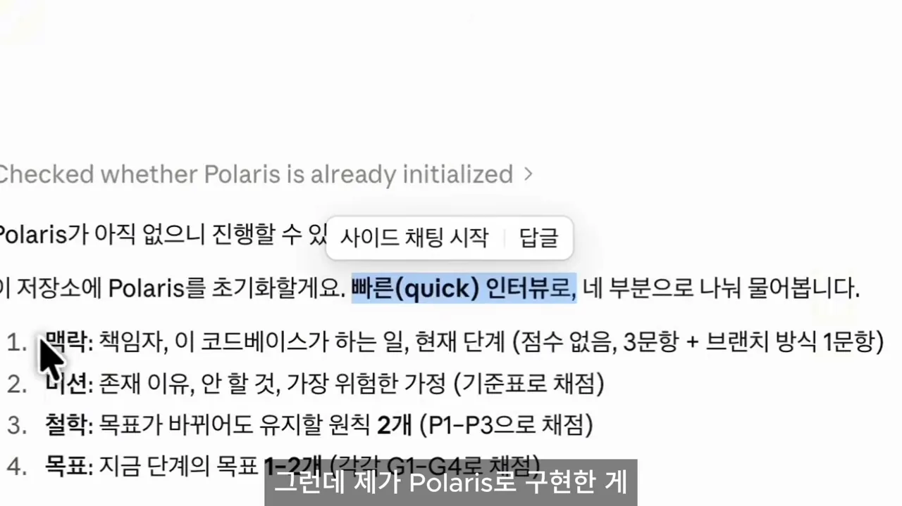
발표자가 꼽는 인터뷰의 핵심은 세 가지예요.
| 묻는 것 | 뜻 | 앞 장면의 예 |
|---|---|---|
| 달성하려는 것 | 이 서비스로 이루려는 목표 | 지금 단계 목표 ten-users-end-to-end |
| 절대 하지 않을 것 | 요청이 와도 넘지 않는 선 | mission.md의 안 할 것 2번 '절약 추천' |
| 철학 | 무언가를 결정할 때 쓰는 판단 기준 | philosophy.md의 '입력은 30초 안에' |
셋 다 코드와 상관없고, 무언가를 만들 때 이미 머릿속에 있는 내용이에요. 클로드 코드에게 알려 준 적이 없을 뿐이에요. 알려 주지 않으면 클로드 코드는 많은 사람이 따르는 흔한 목표를 우리도 가졌다고 짐작하고 일해요.
인터뷰 내용과 그동안 내린 결정, 즉 프로젝트의 히스토리는 전부 파일로 남아요. 오른쪽 파일 트리에 polaris 폴더가 펼쳐져 있고, 그 안에 decisions, goals, issues, learnings, specs 폴더와 mission.md, philosophy.md가 보여요. 왼쪽 요약에는 진행 중인 목표 하나와 'Philosophy: 2 principles'가 찍혀 있어요.
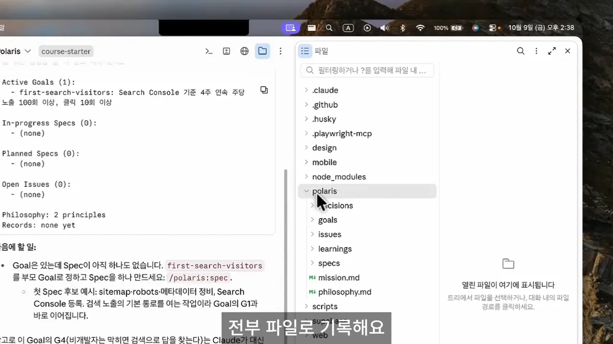
발표자는 목표나 미션, 철학을 대신 정해 주지 않는다고 강조해요. 대신 정하면 빠르지만, 그렇게 만든 서비스는 내 것이 아니니까요. 그리고 짚고 넘어가는 점이 있어요. 구현 전에 의도를 묻는 인터뷰, 어긋나면 멈추고 되묻는 동작은 클로드 코드를 설치하면 따라오는 기본 기능이 아니에요. 발표자가 시스템으로 설계해서 세팅해 둔 결과예요.
오늘 바로 해 볼 것
도구가 없어도 바로 시작할 수 있는 방법도 알려 줘요.
- 구현을 요청하기 전에 먼저 나를 인터뷰해 달라고 해요.
- 내가 달성하려는 것과 절대 하지 않을 것을 별도 파일에 저장해 달라고 해요.
- '알아서 해 줘' 대신 '선택지를 줘'라고 해요.
세 번째가 특히 중요해요. 발표자의 문서에는 '대부분 여기서 막힌다'는 빨간 상자가 있어요. 인터뷰가 번거로워서 '적당히 알아서'라고 답하면 클로드는 빈칸을 그럴듯한 추측으로 채워요. 그 추측이 미션과 어긋날 때 문제가 되고, 원인은 클로드가 아니라 계약서의 빈칸이라고 적혀 있어요. 하이라이트된 마지막 줄이 해법이에요.
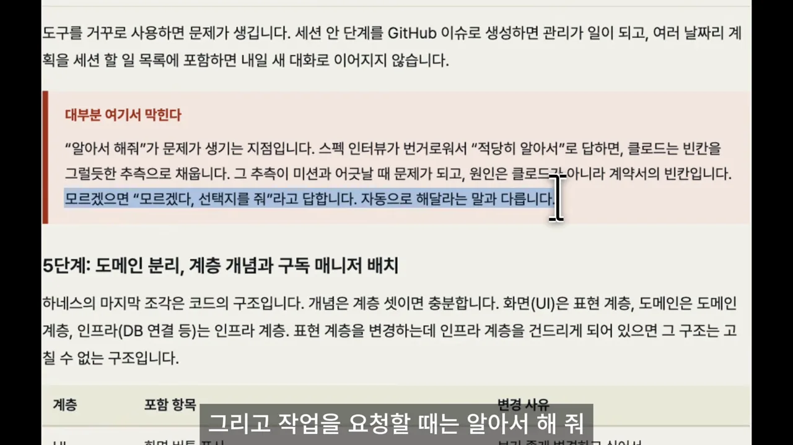
알아서 해 달라는 말은 판단까지 넘기는, 앞에서 말한 인지적 항복(판단의 포기)이에요. 선택지를 달라고 하면서 스스로 판단할 근거를 요청하면 AI를 통제하고 있다는 감각이 확실히 달라진다고 해요.
맨 끝: 완료는 증거로 판정해요
지금까지가 맨 앞, 무엇을 할지 정하고 맡기는 단계였어요. 이제 맨 끝, 클로드 코드가 다 됐다고 가져온 결과를 검토하는 단계예요. 애디의 기준은 분명해요. 화면 가운데 문단이 그 기준이에요. 에이전트 작업의 결승선은 통과한 테스트, 스크린샷, 로그나 트레이스처럼 손에 잡히는 것이어야 한다고 해요.
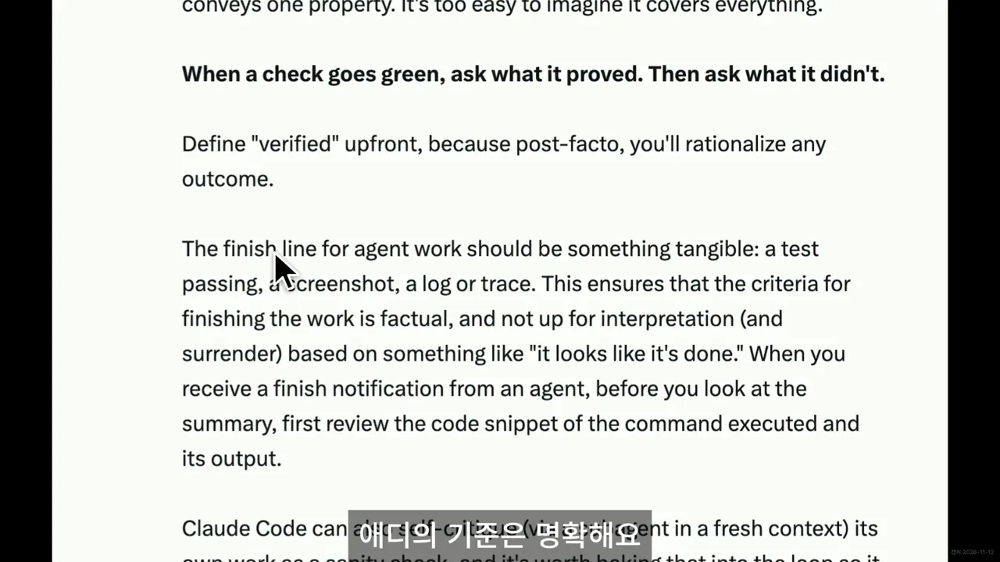
코드를 못 읽는데 결과를 어떻게 검토하냐, 결국 코드를 알아야 하는 것 아니냐는 질문을 많이 받는다고 해요. 코드를 알면 더 많이 보이는 건 맞아요. 그런데 애디의 글을 보면 클로드 코드를 만드는 팀조차 코드 전체를 머리에 넣고 일하지 않아요. 밑줄 친 'The Claude Code team has said publicly' 뒤를 보면, 필요한 부분이 생길 때 그 조각만 클로드에게 설명하게 한다고 적혀 있어요.
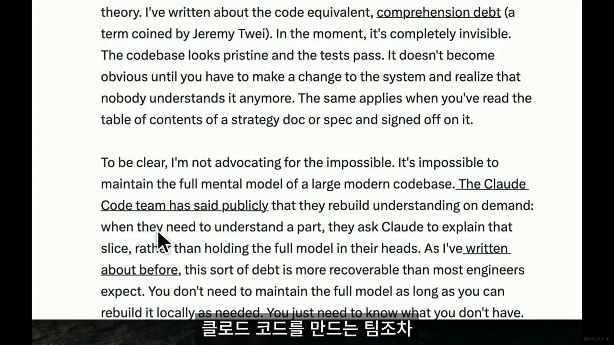
8년 넘게 개발해 온 발표자도 이제 클로드 코드가 쓴 코드를 한 줄씩 읽지 않아요. 검토 대상을 코드에서 완료 기준으로 바꿨거든요. 기능을 만들기 전에 '무엇이 확인되면 이번 작업이 끝인지'를 한 줄로 정하고 들어가요. 애디 말대로 끝난 뒤에 기준을 정하면 어떤 결과가 나와도 합리화하게 되니까요.
발표자의 세팅에서는 기능마다 스펙 한 장을 먼저 만들어요. 담기는 항목이 여섯 개인데, 하이라이트된 S2 완료 기준이 '남이 확인할 수 있는 검사 하나'예요. 범위 밖(이번엔 제외하는 것 하나)과 가장 위험한 가정도 같이 적어요.
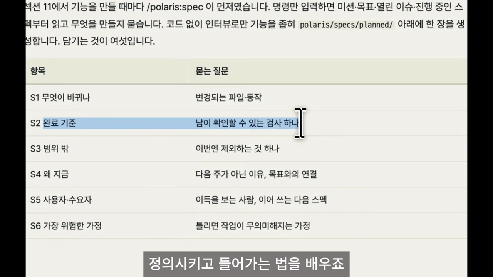
이렇게 맡기면 클로드 코드는 어떻게 검증할지까지 포함한 단계별 계획을 세우고, 구현이 끝나면 브라우저를 직접 열어 화면을 조작해 봐요. 왼쪽 할 일 목록에 '임시 구독 추가해 문구 확인', '결제일 바꿔 7일 경계 확인' 같은 확인 단계가 있고, 오른쪽 브라우저에는 구독 추가 화면이 열려 있어요.
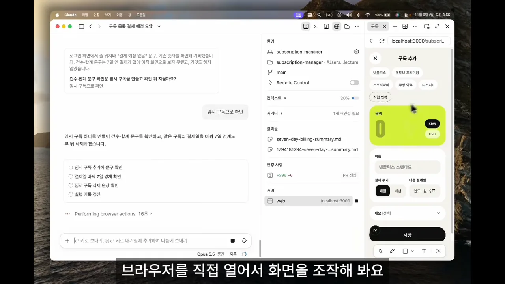
발표자는 이 화면에서 테스트 98개를 모두 통과한 뒤에야 작업이 저장되고 완료 보고가 올라온다고 해요. 보고에는 커밋하고 main에 push까지 마쳤다는 내용, push 직전에 검증 명령이 빌드까지 통과했다는 내용이 함께 적혀 있어요. 아직 확인 못 한 것(임시 구독이 지워지지 않았다는 점)도 따로 밝혀요.
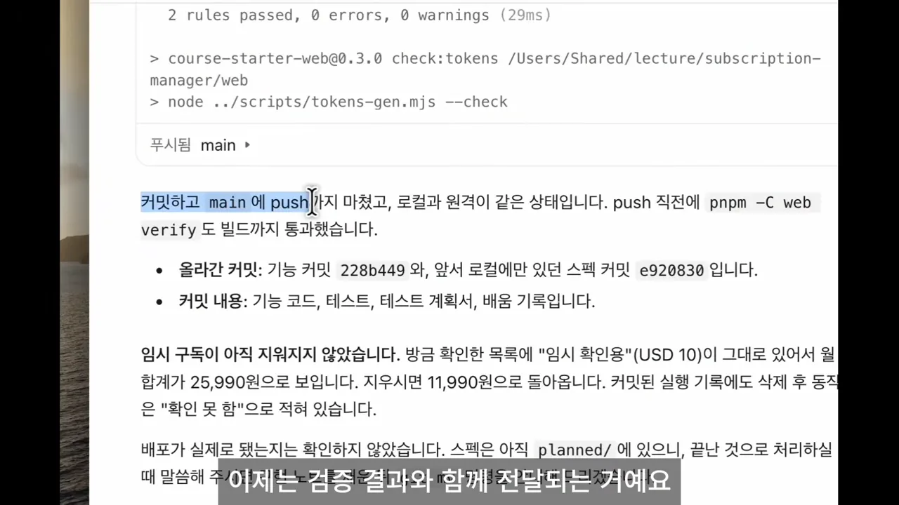
그냥 클로드 코드를 그대로 썼을 땐 제대로 했는지 확인할 방법이 없던 완료 보고가, 이제는 검증 결과와 함께 온다는 거예요. 발표자는 혼자 운영하는 유료 구독 서비스에서도 같은 방식을 써요. 기능 하나가 고장 나면 바로 장애라서, 완료 기준과 검사를 먼저 세팅하고 그 안에서만 일을 맡겨요. 그래야 새 기능을 자신 있게 배포할 수 있다고 해요.
바로 해 볼 수 있는 방법은 이거예요. 요청할 때 무엇이 확인되면 완료인지 먼저 정하고, 완료 보고를 받으면 요약 대신 실제 실행 결과를 보여 달라고 해요.
모든 걸 엄격하게 하라는 건 아니에요
오해하면 안 되는 점이 있어요. 클로드 코드에게 맡기는 모든 일을 엄격하게 관리하라는 뜻이 아니에요. 판단을 미뤄도 되는 상황은 분명히 있어요. 애디의 글에서 하이라이트된 문장이 그 선을 그어요. 틀려도 싼 일은 넘기고, 결과를 다른 사람이 감당해야 하는 일의 판단은 내가 쥐라는 거예요.
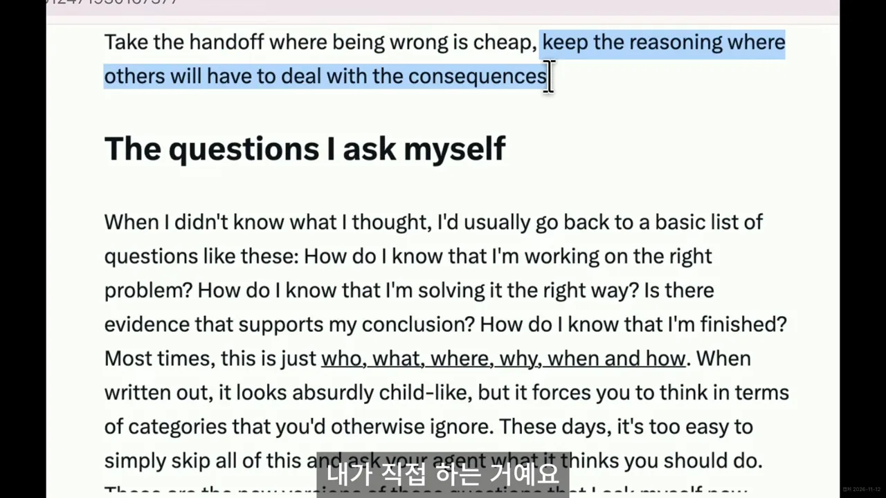
책임만은 위임할 수 없어요
발표자는 영상 처음에 던진 질문, 어떻게 판단과 철학을 지키면서 마음 편히 맡기냐에 대한 답을 하나로 정리해요. 작업의 맨 앞과 맨 끝에서 기준을 세우는 일을 내가 맡는 거예요. 맨 앞에서는 의도를 먼저 적고, 맨 끝에서는 완료 기준을 내가 정해요. 그리고 이 둘이 늘 지켜지게 시스템으로 만들어 둬요.
이 장면에서 화면에 뜬 기사가 애디의 이 글을 다룬 Business Insider 기사예요. 제목은 '앤트로픽 엔지니어가 AI 에이전트가 자기 일을 가져가면서 생기는 인지적 항복을 경고한다'예요.
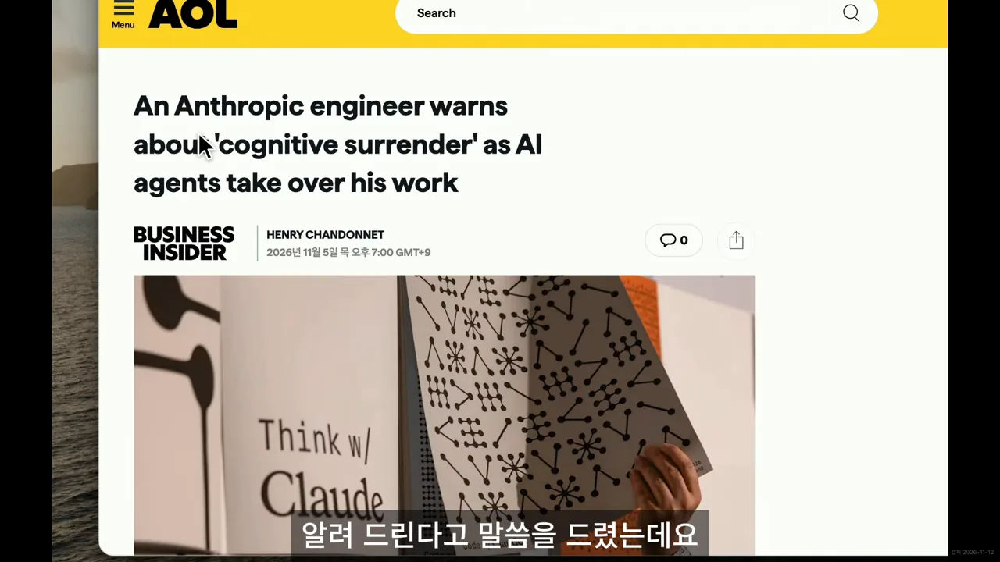
애디는 작업과 검토의 상당 부분은 맡길 수 있어도 책임만큼은 맡길 수 없다고 해요. 하이라이트된 한 문장이에요.
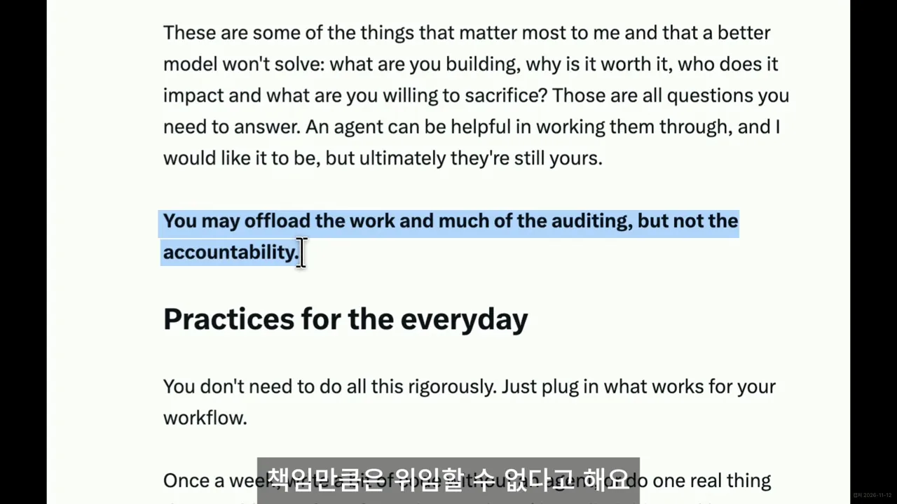
발표자는 여기에 한마디를 보태요. 스스로 책임질 수 있는 시스템을 갖춘 사람이 오히려 훨씬 많은 일을 마음 편히 클로드 코드에게 맡길 수 있다고요. 책임의 근거가 파일과 검사로 남아 있으니까요.
모델이 좋아질수록 더 쉬워지는 포기
애디의 글에서 마지막으로 짚는 문장이 있어요. 하이라이트된 부분은 모델이 좋아질수록 눈에 띄는 오류의 비율이 줄어든다는 내용이에요. 그 뒤 문장은 결과 대부분이 잘 쓰여 있고 대체로 맞아서 다시 볼 필요를 느끼지 못한다고 이어져요.
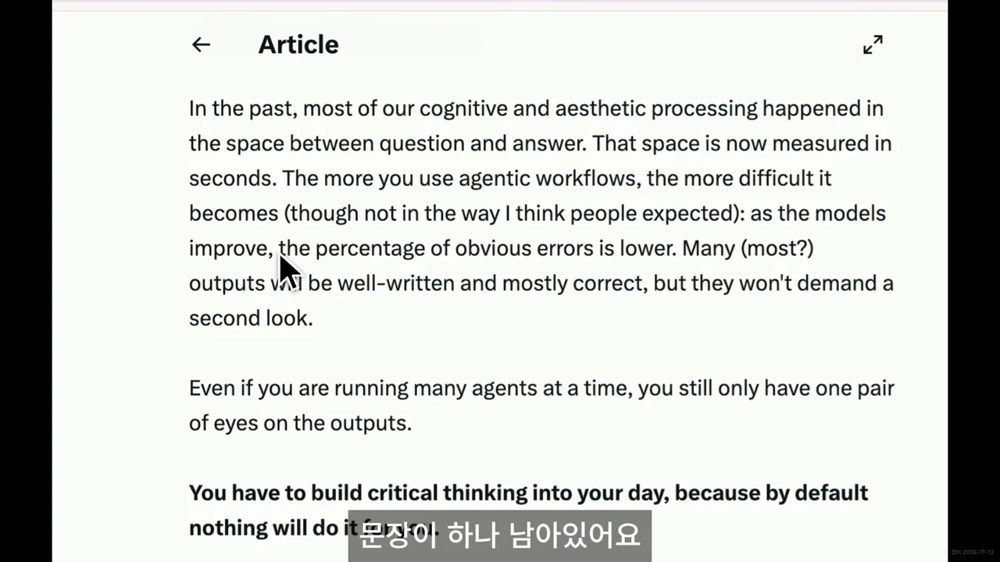
모델이 발전할수록 판단을 포기하기가 더 쉬워진다는 뜻이에요. 그래서 발표자는 클로드 코드의 작업을 이끄는 사람과 완료 보고만 확인하는 사람의 격차가 지금도 벌어지고 있다고 말해요. 클로드 코드로 서비스를 만들어 본 사람이면 겪어 봤을 장면도 들어요. 첫 화면은 10분이면 나오는데, 기능 하나를 붙였더니 다른 기능이 고장 나고 어떤 변경이 원인인지 찾을 수가 없어요. 발표자는 이런 문제를 코드를 들여다보는 대신 실행 결과로 검증해서 풀어요.
내가 스스로 책임질 수 있는 시스템을 갖춘 사람은 정말 많은 작업을 마음 편히 클로드 코드에게 위임할 수 있게 됩니다
— 영상 15:44